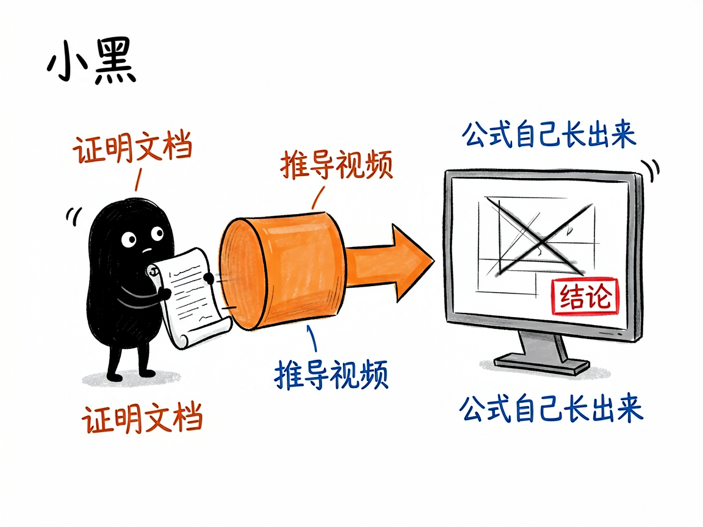
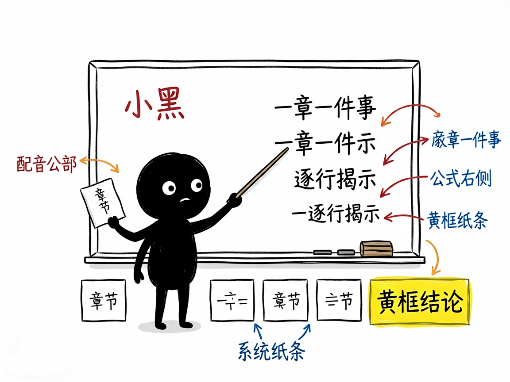

把数学证明做成动画视频，让公式自己"长"出来 —— geometry-math-proof-remotion 介绍
你想过把勾股定理、欧拉公式这类证明讲给别人听吗？光靠文字和静态图，听着听着人就走神了；真去学动画软件又门槛太高。很多人卡在"想做但做不出来"这一步。
geometry-math-proof-remotion 就是来解决这件事的。
你给它一份数学证明的文档，它还你一段深色背景、精准几何风格的推导视频，像 3Blue1Brown（国外那个有名的数理科普频道）那种感觉。

它到底能做什么
- 把证明拆成 6~10 个章节，每章只讲一件事，逻辑一步步推进，不会跳步把推导链打断。
- 几何图形全部用矢量方式绘制（SVG，一种放大也不会糊的图形格式），线条像被"描"出来一样慢慢显现，而不是生硬出现。
- 公式在画面右侧逐行揭示，最后结论用黄框大字标出，观众跟着节奏走。
- 自动生成配音（TTS，也就是文字转语音）和同步字幕，关键词用黄色高亮，像看教学视频一样。
- 输出 1920×1080 横屏成片，深底配红蓝绿黄高饱和色，干净、专业、不花哨。

怎么用
你不需要记任何命令。在 codex / workbuddy 等 agent 装好 geometry-math-proof-remotion 技能后，直接对 AI 说话就行：
场景 1：把勾股定理讲给同学听 你：帮我把勾股定理的证明做成一个动画视频，按"直角三角形、三条边平方、面积拼图"这个思路一步步讲清楚。 AI：它会把证明拆成几个小节，用深色背景、几何图形被"描"出来的方式展现，公式逐行揭示、最后用黄框标出 a²+b²=c²，并配上语音和字幕，给你一段可以直接发的视频。
场景 2：做一期欧拉公式科普 你：我想做一期欧拉公式（就是 e 的 iπ 次方加 1 等于 0 那个式子）的科普短视频，要像 3Blue1Brown 那种风格。 AI：它会把推导过程拆成逻辑连贯的章节，用精准几何风格画出来，关键词高亮，最后输出 1080p 横屏成片。
场景 3：沉淀"经典证明"系列 你：我们账号想做个"经典数学证明"系列，先来一个"质数有无穷多个"的证明。 AI：它会按统一模板产出视频，你以后持续往里加新的一期，风格和节奏都能保持一致。
谁适合用
- 老师、科普作者，想把抽象数学讲得直观。
- 做教育内容的自媒体，缺一个稳定的证明动画模板。
- 想沉淀"经典证明"系列视频的人。
一点说明
它是一个跑在 AI 助手（如 Codex、WorkBuddy）里的技能，不是你手机上能直接打开的 App。你给一份证明文档，AI 帮你产出并渲染成一段视频。它依赖 Remotion（一个用代码做视频的开源框架，但你不用写，AI 帮你写）来生成画面。具体能力以项目文档为准。